6.1.2. Классификация генераторов ПСП
6.1.2. Классификация генераторов ПСП
Качественный генератор ПСП, ориентированный на использование в системах защиты информации, должен удовлетворять следующим требованиям:
− криптографическая стойкость;
− хорошие статистические свойства, ПСП по своим статистическим свойствам не должна отличаться от истинно случайной последовательности;
− большой период формируемой последовательности;
− эффективная аппаратная и программная реализация.
При использовании криптостойкого генератора ПСП для противника должны быть неразличимы три следующие задачи [3]:
1. Определение  -го элемента последовательности на основе известного фрагмента гаммы 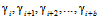 конечной длины b .
-го элемента последовательности на основе известного фрагмента гаммы 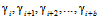 конечной длины b .
2. Определение 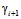-го элемента последовательности на основе известного фрагмента гаммы 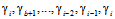 конечной длины b .
3. Определение ключевой информации по известному фрагменту гаммы конечной длины.
Статистически безопасный генератор ПСП должен удовлетворять следующим требованиям:
1) ни один статистический тест не обнаруживает в ПСП каких-либо закономерностей, т. е. не отличает эту последовательность от истинно-случайной;
2) нелинейное преобразование, зависящее от секретного ключа, обладает такими свойствами, что для любого входного вектора e возможны и равновероятны все выходные значения ;
3) при инициализации случайными числами генератор порождает статистически независимые ПСП.
НИ ОДИН ГЕНЕРАТОР ПСЧ, РЕАЛИЗОВАННЫЙ В СТАНДАРТНЫХ БИБЛИОТЕКАХ, НЕ ЯВЛЯЕТСЯ КРИПТОГРАФИЧЕСКИМ И НЕ ПОДХОДИТ ДЛЯ ИСПОЛЬЗОВАНИЯ В КРИПТОГРАФИИ.
Классификация генераторов ПСЧ представлена на рис. 6.1.
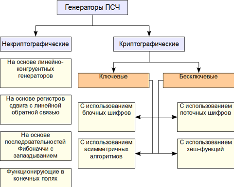 |
Рис. 6.1. Классификационная схема генераторов ПСЧ |
Некриптографические генераторы и их основные свойства были рассмотрены в лекции по потоковым алгоритмам шифрования. Наиболее важный вывод из исследования заключается в следующем: несмотря на то, что в чистом виде их применять нельзя, они могут использоваться в качестве примитивов для построения криптографически стойких генераторов.
Наиболее распространенным подходом к построению криптографических генераторов ПСЧ является использование в составе алгоритма высоко-нелинейной функции, зависящей от ключа. Различают две основные схемы построения таких алгоритмов − с нелинейной внутренней логикой и нелинейной внешней логикой (рис. 6.2 и 6.3 соответственно).
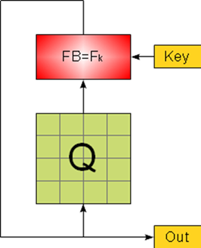
Рис. 6.2. Генератор ПСЧ с нелинейной внутренней логикой
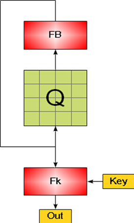
Рис. 6.3. Генератор ПСЧ с нелинейной внешней логикой
Обозначения на рис. 6.2 и 6.3:
Q – элемент памяти алгоритма;
FB − функция обратной связи;
key – ключ;
Out – выход алгоритма.
Важными элементами алгоритма являются наличие и объем используемых элементов памяти и алгоритм инициализации начального состояния алгоритма. От объема внутренней памяти зависит длина периода алгоритма, возможность перебора его состояний, от него же зависит эффективности программной и стоимость аппаратной реализации алгоритма.
Важно понимать, что даже тщательно спроектированные генераторы ПСЧ с использованием проверенных и криптостойких примитивов должны перед из реальным использованием подвергаться тщательному тестированию. Генераторы ПСП обычно дают выход в виде последовательности случайных бит, байт или блоков. Для получения из данных элементов случайного числа, равномерно распределенного в заданном диапазоне, обычно используется операция взятия по модулю, но на практике выясняется, что последовательности, полученные таким способом, имеют недостаточно хорошие случайные свойства, поэтому рекомендуется использовать следующий метод приведения числа к нужному диапазону:
− приведение числа к числу с плавающей точкой с в диапазоне 0-1: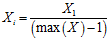 ( для числа длиной 4 байта 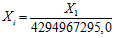);
− приведение числа к диапазону 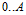:
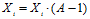,
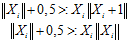.
При генерации псевдослучайного числа из результата шифрования блочного шифра нельзя использовать младшие байты в чистом виде, так как они могут сохранять некоторые арифметические и статистические свойства операций, используемых в блочном шифре.
Рассмотрим некоторые из реализаций криптографических генераторов ПСЧ.
Генератор ПСП на основе БШ ГОСТ 28147−89
Использует в качестве составного элемента блочный шифр ГОСТ 28147−89:
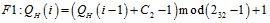,
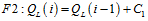
функционирует в соответствии со схемой, представленной на рис. 6.4.
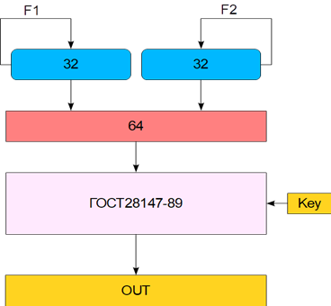 |
Рис. 6.4. Схема генератора ПСЧ на основе БШ ГОСТ28147−89 |
Алгоритм на основе поточного шифра (модифицированный алгоритм Джеффа)
Использует принцип комбинации более простых генераторов ПСЧ, объединенных некоторой функцией (рис. 6.5).
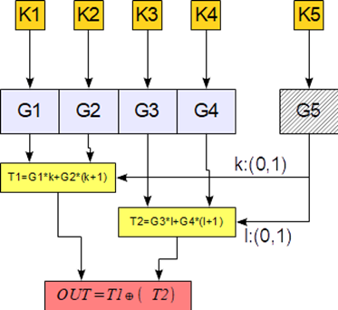 |
Рис. 6.5. Схема генератора ПСЧ на основе модифицированного алгоритма Джеффа |
Алгоритм на основе асимметричного шифра RSA
1. Выберем большие простые числа p, q причем 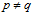 и вычислим 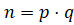;
2. Выберем e взаимно простое с 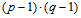;
3. Выберем случайное 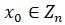;
4. Получим случайные числа 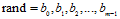 , где 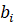− это i-й бит числа 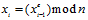; m − разрядность числа, которое надо сгенерировать, выбирается не более 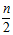.